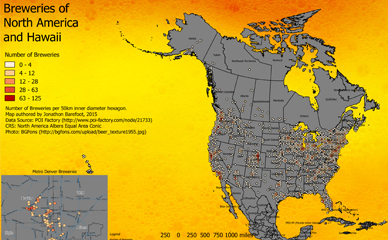

Programming for Web Mapping
Web Cartography at the University of Kentucky
Jonathon Barefoot

Power Plants of the United States
This map provides graphic representation of coal, wind and hydroelectric power plants in the United States. Radius is representative of the total power output of the plant. Users interaction allows for toggling of power plant type and click functionality to reveal individual plant information.
The map was created by georeferencing a database of all U.S. power plants and applying them to a web-based map using Leaflet.

Breweries of North America and Hawaii
This map shows brewery density in North America and Hawaii using 50km inner diameter hexbins. Inset provides breweries in Denver, Colorado using 2km inner diameter hexbins. The map helps brewery seekers to be more efficient when planning a brewery trip
2014 State Prison Populations and Law Enforcement Line of Duty Deaths
This map allows the user to compare the law enforcement officer line of duty deaths with the number of people imprisoned in each state. While there are no clear patterns, the map is intended to allow the end user to explore and draw conclusions about the rates of line of duty deaths and imprisonment.
Crime and Blue Phones on the University of Kentucky Campus
This map allows the user to explore crime on the University of Kentucky campus from January, 2013 through June, 2016. Overlay of the campus blue phones allows the end user to view crime trends over time as it relates to blue phone placement. The end user can also choose to filter by crime category.
Student Attrition Rates in Kenya
This map allows the user to compare the law enforcement officer line of duty deaths with the number of people imprisoned in each state. While there are no clear patterns, the map is intended to allow the end user to explore and draw conclusions about the rates of line of duty deaths and imprisonment.